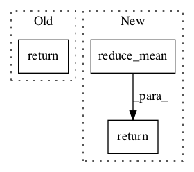

ecbe066e40882b166401b70ae9c4f1d535c93b12,texar/losses/adv_losses.py,,binary_adversarial_losses,#Any#Any#Any#Any#,12

Before Change
else:
raise ValueError("Unknown mode: %s. Only "min_fake" and "max_real" "
"are allowed.")
return gen_loss, disc_loss
After Change
real_loss = tf.reduce_mean(tf.nn.sigmoid_cross_entropy_with_logits(
logits=real_logits, labels=tf.ones_like(real_logits)))
fake_logits = discriminator_fn(fake_data)
fake_loss = tf.reduce_mean(tf.nn.sigmoid_cross_entropy_with_logits(
logits=fake_logits, labels=tf.zeros_like(fake_logits)))
d_loss = real_loss + fake_loss
if mode == "min_fake":
g_loss = - fake_loss
elif mode == "max_real":
g_loss = tf.reduce_mean(tf.nn.sigmoid_cross_entropy_with_logits(
logits=fake_logits, labels=tf.ones_like(fake_logits)))
else:
raise ValueError("Unknown mode: %s. Only "min_fake" and "max_real" "
"are allowed.")
return g_loss, d_loss
In pattern: SUPERPATTERN
Frequency: 3
Non-data size: 3
Instances
Project Name: asyml/texar
Commit Name: ecbe066e40882b166401b70ae9c4f1d535c93b12
Time:
Author: null
File Name: texar/losses/adv_losses.py
Class Name:
Method Name: binary_adversarial_losses
Project Name: zsdonghao/text-to-image
Commit Name: 33708650375d063ed38e317478be3b35c5921914
Time:
Author: null
File Name: tensorlayer/cost.py
Class Name:
Method Name: mean_squared_error
Project Name: NifTK/NiftyNet
Commit Name: f360de0fa4454122d665b9c32f4d5911a4ebec0c
Time:
Author: null
File Name: niftynet/layer/loss.py
Class Name: LossFunction
Method Name: layer_op